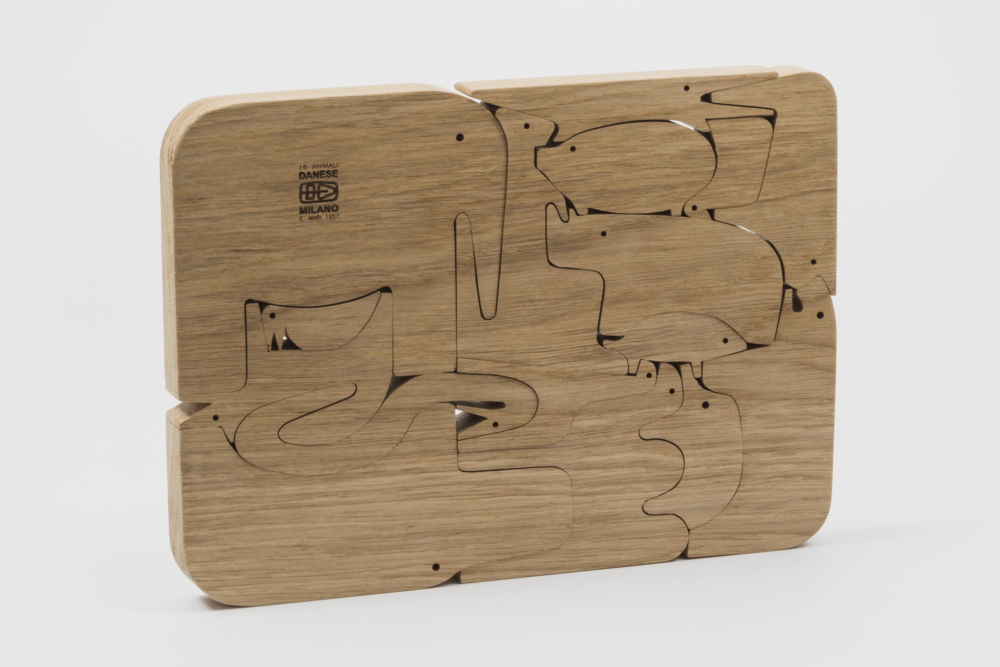
16 Animali
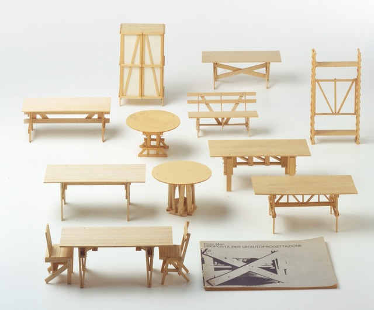
Autoprogettazione models and book.
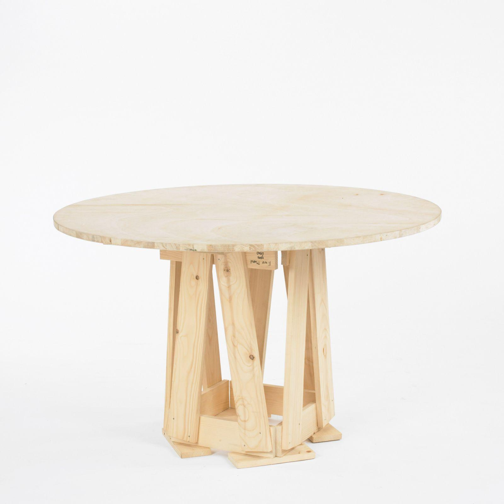
Autoprogettazione table
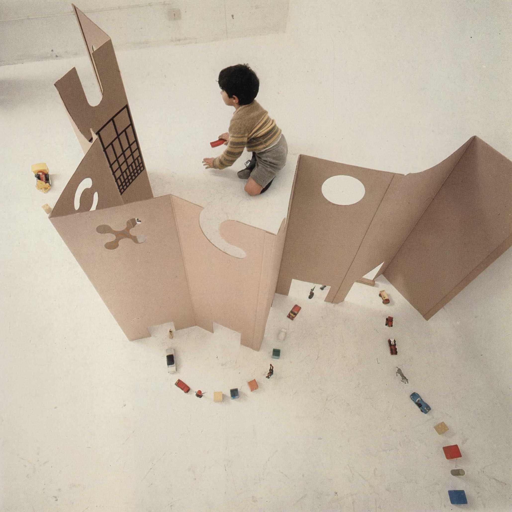
Il posto dei giochi
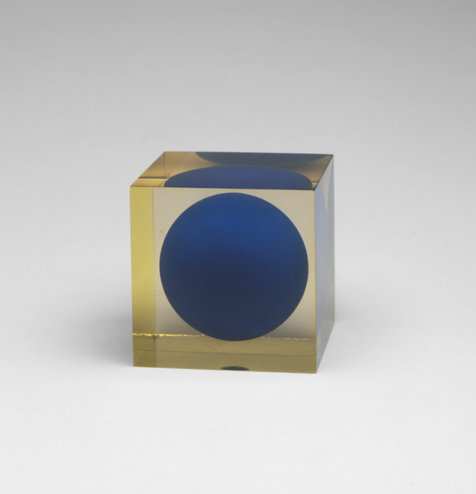
Object, 1959
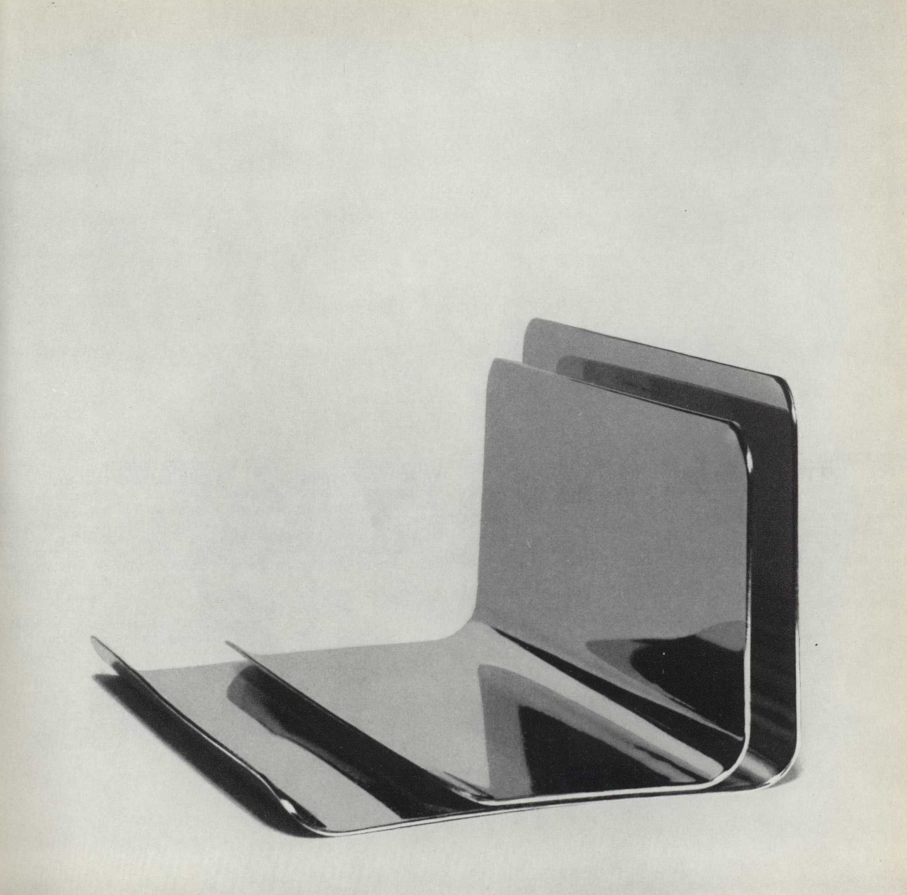
Portacarte e Portamattite, 1962
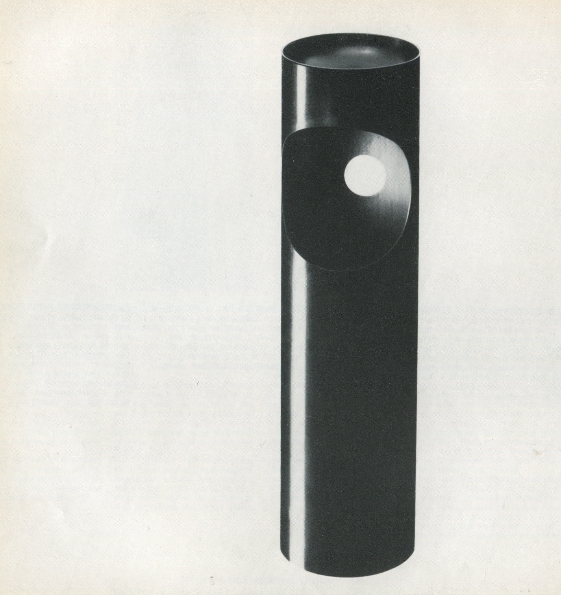
Portacenere cestino, 1964
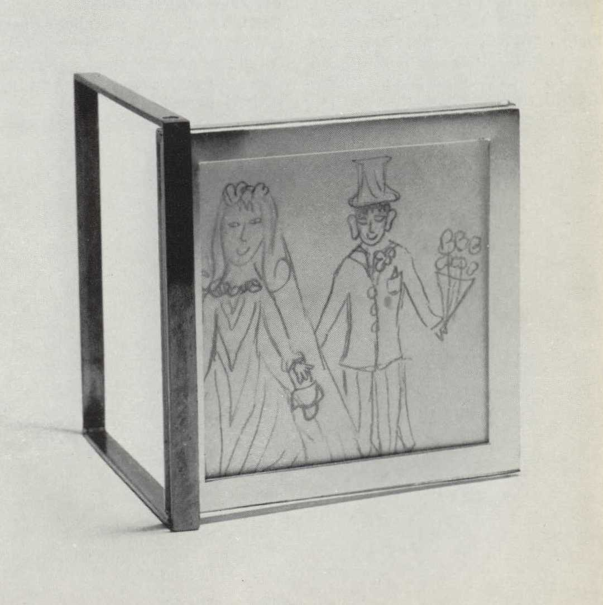
Portraitratti, 1965
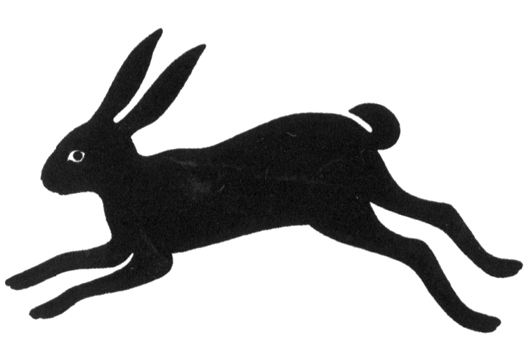
Rabbit drawing
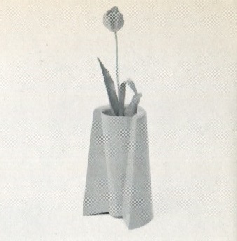
Vaso Doppio, 1969
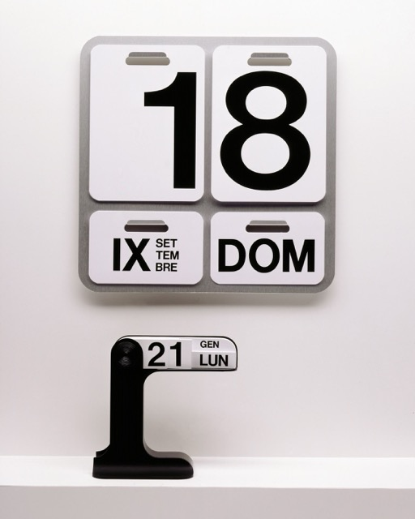
Danese wall calendar
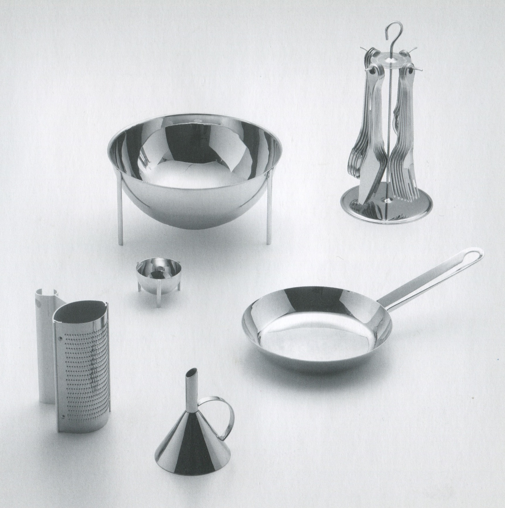
Tableware for Zani & Zani